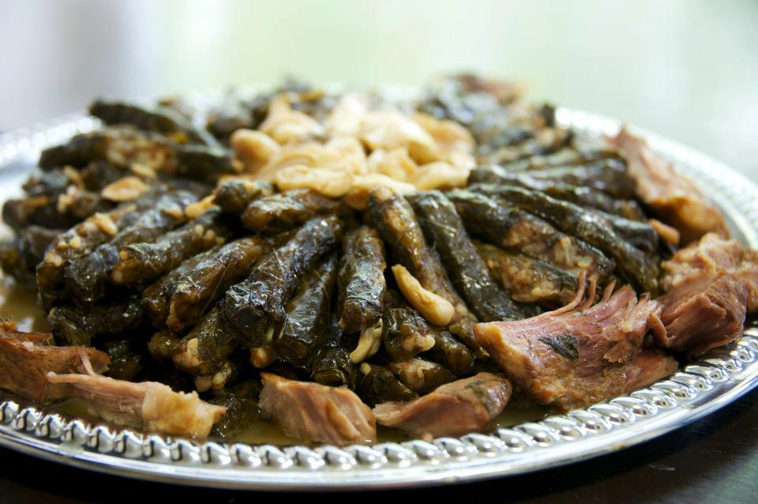

Yabrak

Description
Deliciously sticky, tender Syrian stuffed vine leaves with a lemony and
garlicky rice filling and cooked over a bed of chicken legs.
Ingredients
- 60 Grape Leaves
- 1 lb ground lamb
- 1 cup converted rice rinsed and drained
- 2 lemons juiced
- 1 tsp salt
- ½ tsp fresh ground pepper
- ½ tsp cinnamon
- ½ tbsp allspice ground
Steps
-
If using fresh grape leaves, remove the stems, then blanch them in
boiling water just until they change colour (about 30 seconds). Drain
well and separate and place the leaves on tea towels to dry.
-
Add the lamb, rice, half of the lemon juice, cinnamon, allspice, salt
and pepper to a large mixing bowl and blend well.
-
Place a layer of the smallest or broken leaves in the bottom of a large
pot with a lid (about 10-inch diameter). The pot must be a litter bigger
than the plate you will be placing inside later.
-
Place a leaf, vein side up, on a flat surface, then place about 1 tbsp
of the stuffing mixture near the bottom centre of the leaf. Tuck in the
bottom and sides then roll up tightly like a cigar.
-
Place the rolled leaf, seam side down neatly in the pot. Repeat, placing
rolled leaves closely together.
- Cover the top layer of rolled leaves with a few extra leaves.
- Pour the remaining lemon juice over the leaves in the pot.
- Place an inverted plate on top of the leaves.
- Add enough water to reach the plate.
- Cover the pot and bring to a boil.
- Reduce heat to low and simmer for 35 minutes.
- Turn off heat and allow to cool for about 20 to 30 minutes.
Return to Homepage